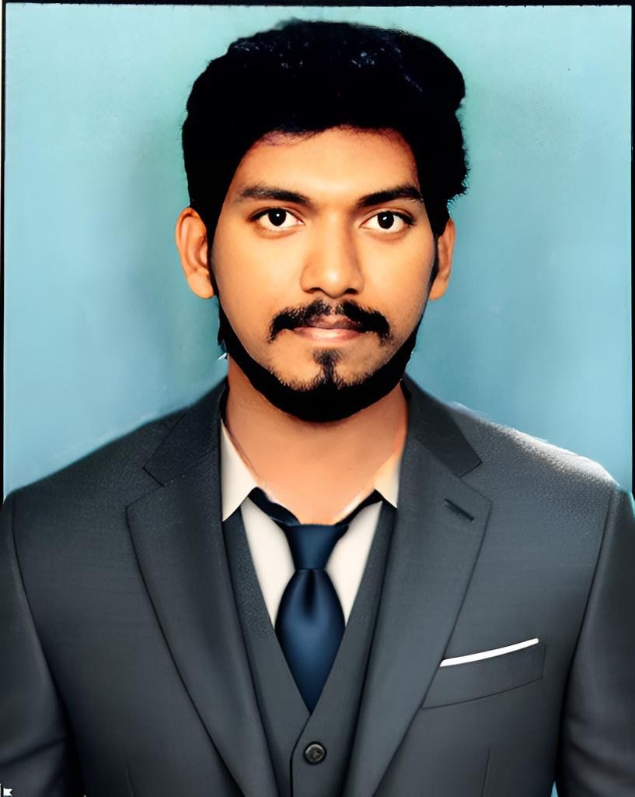

Balaji Utukuri
balajiutukuri036@gmail.com | +917075728713 | www.linkedin.com/in/balaji-utukuri-b0a858320/
Objective
An aspiring software developer looking to pursue a successful career in software development. Strong coding skills
and academic foundation in software development.To obtain a challenging position as a software developer where I can apply my technical skills and problem-solving abilities.I aim to contribute to innovative projects that make a meaningful impact.Seeking opportunities to learn continuously and grow within a dynamic organization.Committed to delivering high-quality solutions through teamwork and dedication.Passionate about leveraging technology to solve real-world problems.
Education
| Course |
Colleg/School |
Year Of Passing |
Percentage |
| B.Tech |
Narayana Engineering College |
2021-2025 |
85% |
| Intermediate |
Sri Chaitanya jr College |
2019-2021 |
93% |
| SSC |
Sri Chaitanya High College |
2018 |
97% |
Skills
- Programming Languages:
-
- C,C++,java,Python,php,javaScript
- DataBases:
- MongoDB,MySQL
- Data Science & Machine Learning:
- NumPy, Pandas, Matplotlib, Scikit-learn, TensorFlow, Keras, PyTorch.
- Soft Skills:
- Problem-Solving, Critical Thinking, Work Ethic, Adaptability, Teamwork
- Development Tools:
- VS Code, Google Colab, Eclipse.
Projects
- Crisis Management and Resources Allocation (Life Link)
- Developed an Android application using Kotlin with a Django backend and SQLite3 for crisis management and
resource allocation.
- Integrated Google Maps API for real-time complaint tracking, safe hubs, and SOS alerts
- Implemented LAN-based offline functionality, allowing the app to work without internet and enabling online
access via port forwarding.
- Bus Ticket Reservation System
- Designed and implemented an online ticket booking system using HTML, CSS, JavaScript, PHP, and MySQL.
- Developed features for user authentication, booking management, and seat selection.
- Ensured database security and optimized query performance.
Internships
- Web Development Intern, Brain O Vision (Remote) May 2022– Jun 2022
- Developed and maintained web applications using HTML, CSS, JavaScript, PHP, and MySQL, gaining hands-on
experience in database management and administration.
- Learned and applied concepts of reverse engineering to enhance existing codebase.
- Worked with low-code platforms like Theme Wagon to accelerate development processes.
Certifications
- Ethical Hacking (Jul- Oct 2024)- NPTEL, IIT Kharagpur View Certificate
- Cloud Computing (Jan- Apr 2024)- NPTEL, IIT Madras View Certificate
- Python Programming (Jun- Jul 2023)- Udemy View Certificate